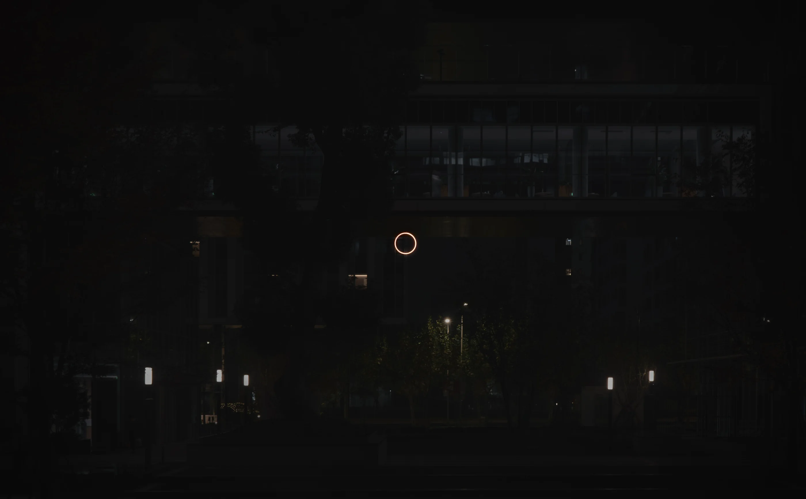
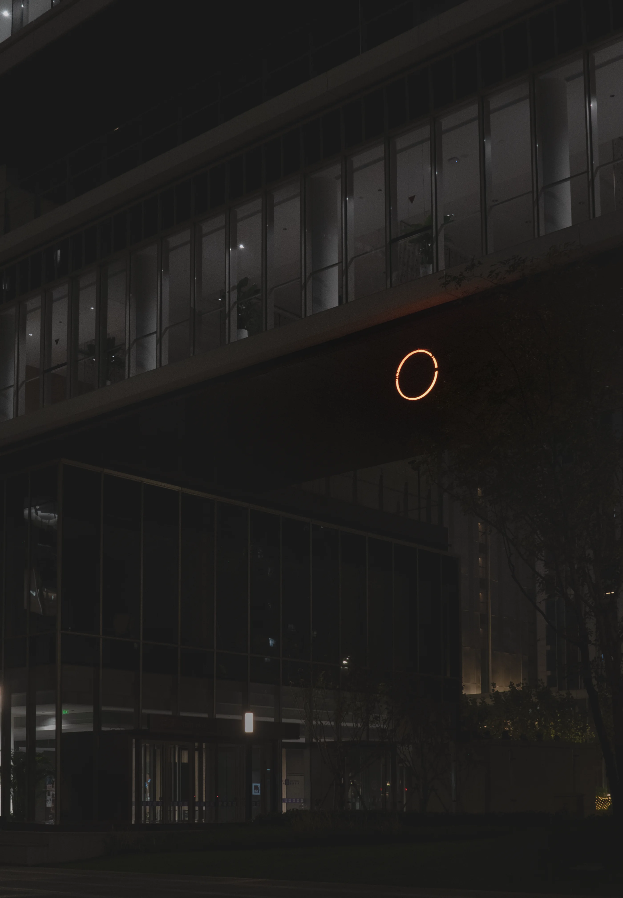
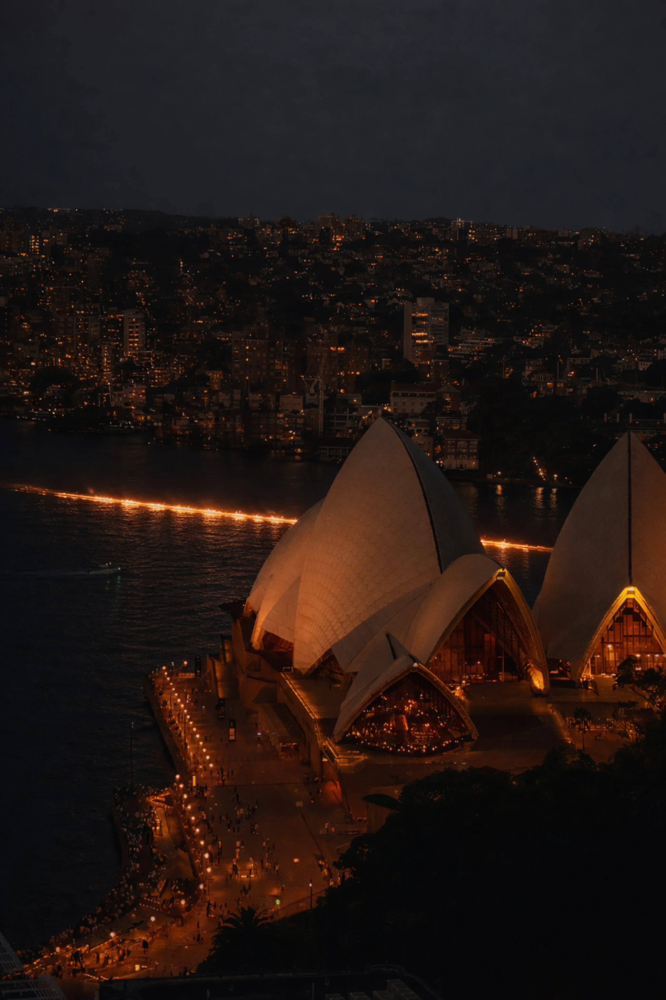
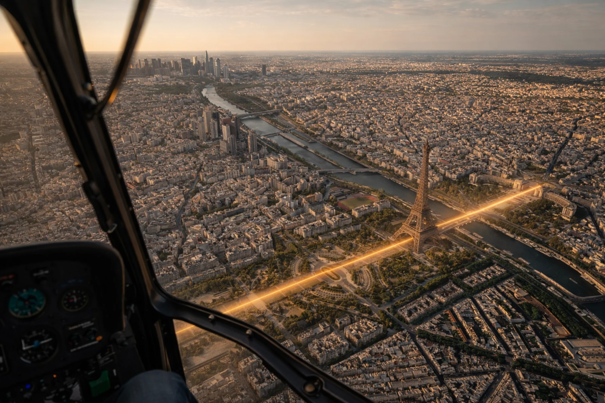

Ephemeral
A temporary ring of light appears within an institutional landscape. Its brief presence asks who may alter a shared space, what remains afterward, and whether permission is also an artistic material.


